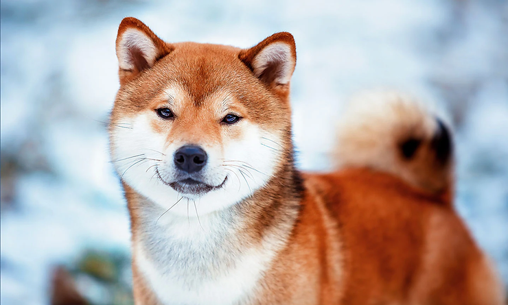
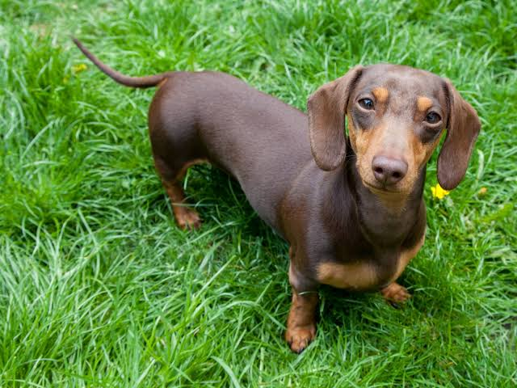
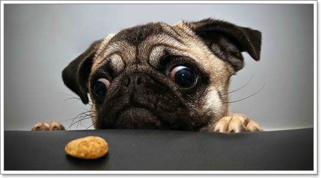

ชิบะอินุ

ชิบะเป็นสุนัขสายพันธุ์ดั้งเดิมของญี่ปุ่น แม้จะมีขนาดตัวที่เล็ก
แต่แข็งแรง ปราดเปรียว และมีนิสัยอ่อนโยน รักเด็ก จึงเป็นที่นิยมเป็นอย่างมากสำหรับผู้ต้องที่การเลี้ยงสุนัขไว้เป็นเพื่อน
ชิบะเป็นสุนัขสายพันธุ์ที่ขนาดตัวเล็กที่สุด ในบรรดาสายพันธุ์ดั้งเดิมของญี่ปุ่นทั้ง 6 สายพันธุ์ น้ำหนักตัวอยู่ที่ 9-12 กิโล
ความสูงเฉลี่ยอยู่ที่ประมาณ 14-16 นิ้ว
สุนัขชิบะ มีอายุขัยอยู่ที่ 12-15 ปี โดยประมาณ
ไม่ค่อยมีโรคประจำสายพันธุ์ รักสะอาด กลิ่นตัวน้อย และไม่เห่าพร่ำเพรื่อ
ดัคส์ฮุนท์

นัขดัชชุนเป็นหนึ่งในสายพันธุ์ที่ระบุตัวได้ง่ายที่สุด เพราะมีรูปร่างเตี้ย ขาสั้น และหลังยาวเป็นจุดเด่นเฉพาะตัว ด้วยรูปร่างที่เป็นเอกลักษณ์นี้จึงได้รับฉายาว่า “สุนัขไส้กรอก”
พวกเค้าถูกเพาะพันธุ์ขึ้นเพื่อล่าตัวแบดเจอร์ในยุโรปสมัยกลาง ซึ่งกลายเป็นที่มาของชื่อสายพันธุ์ โดยคำว่า “ดัชชุน” เป็นภาษาเยอรมันที่หมายถึง “สุนัขแบดเจอร์”
โดยทั่วไปสุนัขพันธุ์ดัชชุนมีนิสัยร่าเริง
มีชีวิตชีวา ขี้เล่น และซื่อสัตย์ พวกเค้าเป็นตัวเลือกที่ดีสำหรับมือใหม่หัดเลี้ยง ด้วยขนาดตัวเล็กจึงเหมาะกับการเลี้ยงในพื้นที่จำกัดอย่างคอนโดหรืออพาร์ทเมนท์
แต่เพราะโครงสร้างร่างกายทำให้ไม่เหมาะกับบ้านที่มีขั้นบันไดจำนวนมาก ดัชชุนเติบโตได้ดีในสภาพอากาศอบอุ่นมากกว่าอากาศหนาวจัด
หมาปั๊ก
“น้อยแต่มาก” คือคำขวัญประจำสุนัขปั๊ก บ่งบอกได้ว่า “ตัวเล็กแต่มีอะไรมากมายให้ค้นหา” สุนัขปั๊กถือว่าเป็นสุนัขตระกูลทอยหรือสุนัขสายพันธุ์เล็ก เมื่อโตเต็มวัย ขณะยืนจะสูงประมาณ 25 - 33 ซม
รูปร่างจะดูเหลี่ยม ล่ำ มีกล้ามเนื้อ และหนักอย่างไม่น่าเชื่อ โดยมีน้ำหนักประมาณ 6.3 - 8.1 กก. ขนสั้น นุ่มและเป็นมัน มีสีเทาเงิน น้ำตาลส้มแอปริคอต น้ำตาลทอง หรือสีดำ